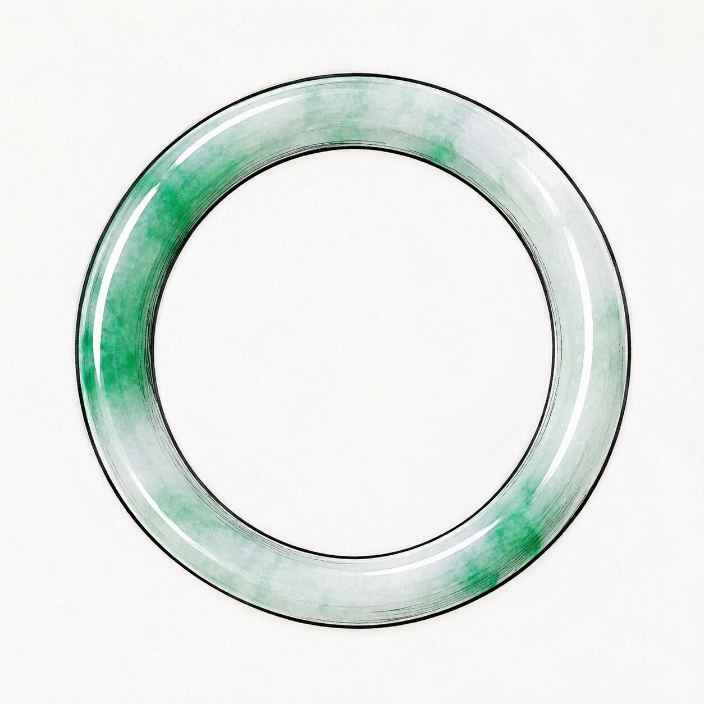

The Round Bangle
圓條 (Yuan Tiao) / 福鐲 (Fu Zhuo)The oldest and most traditional silhouette. The bangle is perfectly cylindrical—round on the outside, round on the inside. Because of its massive thickness, it requires sacrificing a huge amount of the raw jadeite boulder, making it a highly premium cut.
The Aristocratic Roll
Because the inner surface is completely round, it does not sit flush against the skin. Instead, it rolls freely up and down the arm. Historically, aristocratic women favoured this because the constant rolling forced them to move their arms with slow, deliberate grace to avoid loud clanking.
